ВЕДОМСТВЕННЫЕ СТРОИТЕЛЬНЫЕ НОРМЫ
ПРАВИЛА
ПРОИЗВОДСТВА И ПРИЕМКИ РАБОТ
ПО НАГНЕТАНИЮ РАСТВОРОВ
ЗА ТОННЕЛЬНУЮ ОБДЕЛКУ
ВСН 132-92
МОСКВА 1993
Разработаны Всесоюзным ордена Октябрьской революции научно-исследовательским институтом транспортного строительства (ЦНИИСом) - инженеры Смирнова Г.О., Голубев В.Г., канд. техн. наук Сарабеев В.Ф.
Внесены Всесоюзным ордена Октябрьской революции научно-исследовательским институтом транспортного строительства (ЦНИИСом).
Подготовлены к утверждению отделом научно-технического развития Государственной корпорации «Трансстрой».
С введением в действие «Правил производства и приемки работ по нагнетанию растворов за тоннельную обделку» ВСН 132-92 теряет силу «Инструкция по производству к приемке работ по нагнетанию растворов за тоннельную обделку» ВСН 132-81.
Согласованы Главным управлением метрополитенов МПС.
В разработке Правил принимали участие управления строительства «Мосметрострой», «Свердловскметрострой», «Бамтоннельстрой», «Днепрометрострой», «Алма-Атаметрострой».
|
Государственная корпорация «Трансстрой» |
Ведомственные строительные нормы |
ВСН 132-92 |
|
Правила производства и приемки работ по нагнетанию растворов за тоннельную обделку |
Взамен ВСН 132-81 |
1.1. Настоящие «Правила» распространяются на производство и приемку работ по нагнетанию растворов за обделку при строительстве и эксплуатации железнодорожных и автодорожных тоннелей, тоннелей метрополитенов, шахтных стволов, притоннельных камер и других подземных сооружений.
1.2. Нагнетание растворов за обделку тоннелей производится с целью заполнения остающихся за ней в процессе строительных работ пустот и зазоров твердеющими растворами, обеспечивающими совместную работу обделки с окружающим грунтом.
Нагнетание растворов улучшает статическую работу, уменьшает деформации обделки, предупреждает осадки земной поверхности, обеспечивает повышение водонепроницаемости конструкций и, как следствие, уменьшает их коррозию и повышает долговечность сооружений.
1.3. Нагнетание должно производиться в два этапа - первичное и контрольное.
Первичное нагнетание надлежит производить за обделки всех типов, кроме монолитно-прессованных бетонных обделок, сборных обделок, обжатых в породу и возводимых методом продавливания.
Контрольное нагнетание следует производить за обделки всех типов, кроме монолитно-прессованных, и обделок, возводимых при проходке тоннелей щитами с бентонитовым пригрузом.
|
Внесены Всесоюзным ордена Октябрьской Революции научно-исследовательским институтом транспортного строительства (ЦНИИСом) |
Утверждены
Государственной корпорацией «Трансстрой» |
Срок введения в действие
|
1.4. При уточнении гидрогеологических условий по трассе тоннеля по исполнительной документации при возможном подъеме уровня грунтовых вод, воздействия техногенных и других факторов должна предусматриваться уплотнительная инъекция окружающих тоннель грунтов с целью повышения их водонепроницаемости.
1.5. Отступления от отдельных положений настоящих Правил из-за особенностей инженерно-геологических условий и при использовании новых технологий сооружения тоннелей должны быть согласованы с заказчиком и проектной организацией и отражены в проекте производства работ.
2.1. Для первичного нагнетания следует применять растворы на основе цемента и песка (обычные цементно-песчаные и с мелкодисперсными заполнителями - золой, глиной и другими материалами), для контрольного - на основе цемента (чистые цементные и с мелкодисперсными заполнителями).
Мелкодисперсные заполнители и химические добавки в виде отдельных компонентов или их сочетаний вводятся в растворы для снижения расхода цемента, улучшения технологических свойств раствора (подвижности, нерасслаиваемости и др.), регулирования сроков схватывания, повышения плотности и водонепроницаемости тампонажного камня.
Оптимальное количество заполнителя и химических добавок устанавливается экспериментально, при подборе состава раствора, с учетом технико-экономических показателей.
2.2. Состав раствора для нагнетания выражается последовательным соотношением твердых составляющих по массе и отношением воды к цементу или сумме твердых компонентов. Например, Ц : П : 3 : Г (цемент : песок : зола : глина) = 1 : 3 : 2 : 1, В/Ц (вода/цемент) = 0,8 или В/Т (вода/цемент + песок + зола + глина) = 0,5.
2.3. Выбор состава раствора в зависимости от типа обделки и обводненности грунта следует производить по табл. 1.
Подвижность (растекаемость) раствора, см ………. 10 - 30
Расслаиваемость, см.........…………………………… менее 5
Водоотделение в течение 1 ч, %....…………………. не более 2
Выход тампонажного камня, %.....…………………. 95 - 100
Таблица 1
|
Вид нагнетания и составы растворов |
Требования к тампонажному камню |
|||||
|
первичное |
контрольное |
Прочность на сжатие, МПа, не менее |
Коэффициент фильтрации, см/с, не менее |
|||
|
Ц : (П + Г+З) |
В/Т |
Ц : (Г, З) |
В/Т |
|||
|
Необводненный грунт |
||||||
|
Сборная чугунная |
1 : 3 ¸ 1 : 7 |
5,0 |
||||
|
Монолитная бетонная |
1 : 3 ¸ 1 : 7 |
0,5 ¸ 3,0 |
1 : 0 ¸ 1 : 8 |
0,8 ¸ 5,0 |
5,0 |
1×10-7 |
|
Сборная железобетонная |
1 : 2 ¸ 1 : 5 |
7,5 |
||||
|
Обводненный грунт |
||||||
|
Сборная чугунная, ж.-б. со связями растяжения или металлоизоляцией |
1 : 3 ¸ 1,6 |
5,0 |
||||
|
Монолитная бетонная |
1 : 2 ¸ 1 : 5 |
0,5 ¸ 2,0 |
1 : 0 ¸ 1 : 8 |
0,8 ¸ 5,0 |
7,5 |
1×10-8 |
|
Сборная ж.-б. унифицированная |
1 : 2 ¸ 1 : 4 |
7,5 |
||||
Примечания. 1. Условные обозначения: Ц - цемент, П - песок, Г - глина, З - зола, В - вода.
2. Раствор, состав которого указан сокращенно Ц: (П + Г + З), является цемемтно-песчаным с добавками глины (Ц : П : Г), золы (Ц : П : З) или обоих материалов (Ц : П : Г : З).
3. Раствор, состав которого указан сокращенно Ц: (Г, З), является цементным с добавками глины (Ц : Г) или золы (Ц : З).
4. Водотвердое отношение В/Т - соотношение воды и твердых составляющих раствора: цемента, песка, глины, золы (Ц + П + З + Г) по массе.
2.5. Сроки схватывания растворов определяются следующими условиями:
начало схватывания растворов определяется технологией приготовления и обводненностью грунтов;
для первичного нагнетания за сборные обделки растворы должны иметь конец схватывания, укладывающийся в промежуток времени от окончания нагнетания до начала передвижки проходческого комплекса;
для нагнетания за обделки (сборные и монолитные) в обводненных грунтах растворы для первичного нагнетания должны иметь конец схватывания в зависимости от обводненности в пределах 0,5 - 3 ч после поступления за обделку.
2.6. Подбор состава раствора, имеющего при затвердевании однородную плотную структуру, достаточную прочность и водонепроницаемость (в соответствии с табл. 1) и отвечающего требованиям пп. 2.4 - 2.5, должен производиться лабораторией по методикам, приведенным в приложении 1.
3.1. Для приготовления растворов могут использоваться различные виды цемента, песок, глины обычные и бентонитовые комовые, бентонитовые глинопорошки, суглинки, золы-унос и другие, инертные материалы, возможность применения которых устанавливается подбором составов растворов в лабораторных условиях.
3.2. Для приготовления растворов следует применять портландцемент марки 300-400 по ГОСТ 10178-85.
Допускается применение высокомарочного портландцемента, а также его разновидностей - пластифицированного, тампонажного при соответствующем технико-экономическом обосновании.
Применение шлакопортландцемента, пуццоланового, глиноземистого, расширяющегося и гидрофобного цементов допускается только после проведения лабораторных и опытных работ, определяющих время схватывания раствора в конкретных условиях строительства.
В условиях агрессивной среды вид цемента следует выбирать согласно СНиП 2.03.11-85 по защите строительных конструкций от коррозии.
При приготовлении растворов не разрешается смешивать цементы различных видов и марок.
Допускается применение других видов вяжущих для приготовления растворов при соответствующем обосновании и проведении опытно-экспериментальных работ.
3.3. Для приготовления цементно-песчаных растворов рекомендуется применять средне- и мелкозернистый пески (во избежание расслаиваемости растворов при перекачивании) в соответствии с ГОСТ 8736-85.
3.4. Вода для затворения раствора должна удовлетворять требованиям ГОСТ 23732-79.
3.5. Для замены части цемента при соблюдении требований п. 2.3 к качеству растворов рекомендуется использовать перечисленные ниже минеральные мелкодисперсные заполнители:
высоко- и низкокальциевые золы-унос сухого или мокрого отбора, отвечающие требованиям ГОСТ 25818-83, для приготовления цементно-золо-песчаных и цементно-зольных растворов;
бентонитовые комовые глины или глинопорошки, отвечающие требованиям ТУ-39-01-08-158-81, для приготовления цементно-глинистых, глинистых растворов, а также в качестве добавок к цементно-песчаным и цементно-золо-песчаным растворам;
местные глины с содержанием глинистых частиц размером 0,01 - 0,05 мм до 40%, 0,50 - 0,005 мм от 35 до 65%, 0,005 мм от 15 до 30% песчаных частиц не более 8 - 10% (в том числе крупнее 1 мм не более 1%) для приготовления цементно-песчано-глинистых и цементно-глинистых растворов;
другие виды материалов - отходы различных производств (металлургические и топливные шлаки, микрокремнезем, отходы переработки сырья и т.п.), пригодность которых для приготовления тампонажных растворов устанавливается лабораторными исследованиями и технико-экономическим расчетом.
3.6. Для приготовления растворов могут использоваться выпускаемые специализированными заводами сухие смеси основных компонентов раствора (цемент, песок, добавки), отвечающие требованиям ТУ 400-2-37-88.
3.7. Для улучшения технологических свойств растворов и получения требуемых характеристик тампонажного камня рекомендуется применять химические и минеральные добавки.
Вид и количество минеральных и химических добавок для цементных, цементно-песчаных и глинистых растворов назначаются в соответствии с рекомендуемым приложением 2 и корректируются при подборе составов растворов.
Применение отходов производства и химических добавок для приготовления тампонажных растворов согласовывается с санитарными службами в установленном порядке.
3.8. Расчет потребности материалов для приготовления растворов рекомендуется проводить по методике, приведенной в приложении 3.
3.9. Способы хранения и транспортировки материалов и добавок (приложение 4) должны отвечать требованиям соответствующих ГОСТов, ТУ, инструкций.
4.1. Для производства работ по нагнетанию растворов за тоннельную обделку применяется смесительное и насосное оборудование, раствороводы, инъекторы и контрольно-измерительная аппаратура.
Технологическое оборудование и его размещение должны обеспечивать:
высокие темпы производства работ при минимальных трудовых и материальных затратах;
наименьшее загромождение тоннеля, и безопасное обслуживание машин и механизмов, а также удобство транспортирования материалов и растворов.
4.2. Приготовление раствора следует производить в растворомешалках периодического и непрерывного действия, производительность которых должна обеспечивать непрерывную работу насосов, подающих раствор за обделку.
Для приготовления растворов на основе цемента и песка рекомендуется использовать растворомешалки лопастные типа СО и турбулентные смесители типа СБ, для приготовления растворов на основе цемента - растворомешалки турбинные типа РМ и лопастные типа ЛРМ (приложение 5).
Пневморастворонагнетатели (приложение 6), а также штукатурные агрегаты (приложение 7) осуществляют как приготовление, так и подачу раствора за обделку.
4.3. При больших расходах растворов на основе цемента и песка и давлении нагнетания до 0,5 МПа рекомендуется применять диафрагменные и поршневые насосы типа СО, при небольших расходах раствора на основе цемента и давлении нагнетания до 1,0 Мпа - плунжерные и винтовые растворонасосы (приложение 8).
4.4. Раствор от насоса к инъектору подается по гибким раствороводам или металлическим трубопроводам.
В качестве гибких раствороводов напорной линии используются рукава:
резиновые напорные с нитяными оплетками (ГОСТ 10362-76);
резинотканевые напорные (ГОСТ 18698-79);
буровые оплеточные (ТУ 38-10358-81).
Для транспортирования раствора по металлическим трубопроводам применяются стальные бесшовные горячедеформированные трубы (ГОСТ 8732-78).
4.5. Стыковые соединения рукавов и металлических труб раствороводов должны обеспечивать свободное прохождение раствора и быструю их сборку и разборку. Варианты конструкции соединений представлены на рис. 1.
Рис. 1. Стыковые соединения раствороводов:
а - металлических труб; б - шлангов; 1 - стальная труба; 2 - гайка; 3 - фланцы; 4 - ось диаметром 12 мм; 5 - шплинт; 6 - щека; 7 - прокладка; 8 - болт специальный; 9 - шланг; 10 - заклепка
4.6. Присоединение раствороводов к отверстиям в обделке должно осуществляться с помощью инъекторов, оснащенных обратным клапаном или запорными (пробковыми или шаровыми) кранами, которые обеспечивают герметизацию отверстий. Диаметр проходного отверстия крана должен соответствовать диаметру раствороводов. Варианты конструкций инъектора представлены на рис. 2.
Рис. 2. Варианты конструкций инъекторов для нагнетания растворов за обделку:
а - первичного; б - контрольного; 1 - обделка; 2 - эллипсовидная упорная металлическая пластина; 3 - труба инъектора; 4 - резиновая шайба; 5 - плита; 6 - нажимная гайка с рукоятками; 7 - кран запорный; 8 - быстроразъемное соединение; 9 - рукав растворовода; 10 - скважина; 11 - затвердевший раствор; 12 - уплотнитель резиновый; 13 - манометр с предохранительной камерой
4.7. Измерительная аппаратура - манометры, водомеры, ареометры, термометры, часы-секундомеры и т.п. - должна обладать требуемой точностью. Манометры, водомеры и весы должны иметь соответствующие удостоверения о проверке.
Манометры должны быть снабжены предохранителями, препятствующими поступлению раствора в трубку манометра.
5.1. В зависимости от технологии сооружения, применяемого оборудования и объемов нагнетания возможны следующие схемы приготовления и подачи растворов:
1) транспортирование к месту работ материалов - приготовление раствора (ручная загрузка материалов, периодическое смешение) - нагнетание (в основном, периодическое);
2) предварительное приготовление сухих растворных смесей - транспортирование смеси к месту работ - приготовление раствора (механизированная загрузка, непрерывное смешение) - нагнетание (непрерывное);
3) предварительное приготовление раствора - транспортирование готового раствора - дополнительное перемешивание (побуждение) - нагнетание (в основном, непрерывное).
5.2. Приготовление растворов по первым двум схемам; осуществляется непосредственно на рабочем месте:
из отдельных компонентов раствора в растворонагнетателях и растворомешалках периодического действия;
из сухой смеси, приготовленной на специализированном заводе или установках типа СБ-168 из просушенного песка (золы, глины), вяжущего - в растворосмесителях непрерывного действия.
5.3. По третьей схеме предварительное приготовление растворов осуществляется на строительной площадке с использованием:
для приготовления цементно-песчаных растворов - бетонорастворосмесительной установки передвижной типа СБ-140 или инвентарной типа СБ-135;
для приготовления цементных, цементно-глинистых растворов - высокомеханизированного тампонажного комплекса, включающего цементно-смесительный и цементировочный агрегат УС6-30 (2СМН-20) и ЦА-320, станцию контроля СКЦ-2М и типовую глиностанцию;
для приготовления бентонитовых растворов - глинорастворной передвижной установки типа СБ-137.
5.4. Дозирование материалов в процессе приготовления растворов механизированным способом должно производиться по массе. Вода и водные растворы химических добавок дозируются по объему. Точность дозировки для воды и цемента - до 3%, для песка и минеральных добавок - до 5%.
5.5. Очередность введения компонентов в растворомешалку (растворонагнетатель) при приготовлении многокомпонентных растворов (в зависимости от состава) следующая: вода - бентонит (глина) - цемент - зола-унос - песок.
Бентонитовая глина должна вводиться в раствор в виде порошка или заранее приготовленной суспензии, последнее обеспечивает повышенный выход цементного камня.
Загрузку в емкость растворомешалки (растворонагнетателя) каждого последующего компонента производят при получении однородной смеси после загрузки предыдущих компонентов в полном количестве.
5.6. Химические добавки для улучшения свойств растворов готовятся заранее в виде раствора повышенной концентрации и вводятся в воду затворения в количестве, обеспечивающем рабочую концентрацию их в нагнетаемом растворе.
Введение химических добавок-ускорителей должно производиться в готовый раствор перед выгрузкой (нагнетанием) в виде водного раствора при непрерывном перемешивании раствора.
5.7. Приготовленный раствор должен непрерывно перемешиваться или перекачиваться до момента его нагнетания за обделку.
5.8. Транспортирование материалов к месту производства работ по нагнетанию следует осуществлять в заводской упаковке (многослойных бумажных мешках, барабанах и др.) или в контейнерах и вагонах с перегородками для разделения компонентов раствора.
Транспортирование к месту готовых растворов для первичного нагнетания следует осуществлять в подвижных специальных вагонах, пневмобетононагнетателях и авторастворовозах, оснащенных побудителями, или по трубопроводам, подачу готовых растворов для контрольного нагнетания - по трубопроводам.
В процессе подачи материалов и растворов необходимо исключить возможность попадания в них воды, грунта и других инородных предметов, а также, потери раствора и его составляющих.
5.9. Для приготовления и нагнетания растворов должны применяться инвентарные передвижные тележки, оснащенные растворомешалками, растворонасосами и оборудованием для подъема контейнеров и вагонеток с раствором, сухой смесью или отдельными компонентами для приготовления раствора (приложение 9).
Первичное нагнетание
6.1. Перед нагнетанием раствора торцевые зазоры между сборной обделкой и грунтом при горном способе герметизируются уплотняющим материалом или специальным устройством, не пропускающим раствор (приложение 10).
При щитовой проходке для герметизации зазоров между сборной обделкой и оболочкой щита следует применять специальное металлическое кольцо с резиновым фартуком, подвешиваемое на щитовые домкраты, или уплотнительное торовое устройство, размещаемое в хвостовой части оболочки (приложение 11).
Перед нагнетанием за сборную обделку все трещины и неплотности в швах тщательно законопачивают.
6.2. Первичное нагнетание раствора за сборную обделку тоннеля должно производиться за каждое последнее смонтированное кольцо.
При горном способе проходки допускается в устойчивых грунтах нагнетание производить до уровня горизонтального диаметра последнего собираемого кольца, а на всю высоту кольца - с отставанием не более трех колец.
6.3. При щитовой проходке рекомендуется (а при проходке под сооружениями метрополитена необходимо) осуществлять нагнетание раствора в последнее смонтированное кольцо непосредственно в процессе передвижки щитового комплекса.
6.4. Процесс нагнетания должен осуществляться непрерывно до полного заполнения пустот. Нагнетание должно осуществляться снизу вверх по кольцу во все отверстия в спинках блоков или тюбингов по обе стороны вертикальной оси обделки тоннеля (рис. 3).
Рис. 3. Порядок первичного нагнетания за сборную чугунную и железобетонную обделки:
1, 2, 3, 4 - симметричное нагнетание за обделки без связей; 1¢, 2¢, 3¢, 4¢, 5¢, 6¢, 7¢ - последовательное нагнетание
6.5. Первичное нагнетание раствора за монолитную обделку тоннеля должно производиться на участках длиной 20 - 30 м по достижении бетоном обделки проектной прочности.
Допускается производить нагнетание раствора за обделку по достижении бетоном 75% проектной прочности при наличии соответствующего обоснования, тщательного контроля за процессом нагнетания и согласования с проектной организацией.
6.6. Первичное нагнетание за монолитную обделку стен необходимо производить последовательно по обе стороны тоннеля в скважины, расположенные продольными рядами (рис. 4). Работы по нагнетанию следует производить одновременно по обе стороны вертикальной оси обделки в два симметрично расположенных отверстия.
Нагнетание за монолитную обделку, сооружаемую с применением пневмобетоноукладчиков или бетононасосов в устойчивых плотных грунтах, не производится на участках тоннелей ниже пяты свода при отсутствии временной крепи с забутовкой или деревянной затяжкой.
Рис. 4. Порядок первичного и контрольного нагнетания раствора за монолитную бетонную обделку:
· - скважины для первичного нагнетания; о - скважины для контрольного нагнетания; à - направление нагнетания
6.7. Нагнетание за сводовую часть обделки надо производить после завершения нагнетания за стены тоннеля, переходя от нижерасположенных к вышерасположенным скважинам.
6.8. Нагнетание за обделку шахтных стволов следует производить снизу вверх отдельными захватками, высота которых устанавливается проектом производства работ в зависимости от инженерно-геологических условий и метода возведения обделки.
6.9. При сооружении стволов методом погружения в тиксотропной рубашке должны устраиваться пояса из цементно-песчаного раствора состава 1:1, сооружаемые в пределах двух нижних и двух верхних колец обделки.
Подача цементно-песчаного раствора должна производиться растворонасосами по металлическому раствороводу, погружаемому через тиксотропный раствор до заданного уровня. По мере вытеснения тиксотропного раствора растворовод укорачивается. Подача цементно-песчаного раствора через отверстия в тюбингах не допускается.
6.10. Нагнетание за обделку должно производиться при температуре в тоннеле не ниже 5°С. При температуре ниже 5°С и нагнетании раствора за обделку тоннелей, сооружаемых в вечномерзлых или искусственно замороженных грунтах, следует выполнять дополнительные требования, согласно специальным указаниям проекта и приложения 12.
6.11. Окончание нагнетания за сборные и монолитные обделки следует определять по появлению раствора в вышерасположенных отверстиях (скважинах) или при наступлении «отказа». Максимально допустимое давление на обделку не должно превышать 0,5 МПа.
6.12. Отверстия, в которых нагнетание уже произведено, после снятия инъекторов следует закрывать деревянными или полиэтиленовыми пробками. Пробки из отверстий извлекаются только после схватывания раствора.
6.13. При перерыве нагнетания более полутора часов необходимо производить промывку растворомешалок, растворонасосов и раствороводов.
6.14. Дефекты в беконе обделки (раковины, трещины и т.д.) должны быть ликвидированы до начала контрольного нагнетания.
Контрольное нагнетание
6.15. Контрольное нагнетание раствора за сборные обделки необходимо производить по всему периметру. Контрольное нагнетание не производится за лотковую часть монолитных обделок.
6.16. Контрольное нагнетание за сборные обделки производится вне действия проходческого комплекса (щита) на расстоянии 30 - 50 м от забоя. Контрольное нагнетание на участке с притоннельными сооружениями должно осуществляться после завершения их строительства.
При сооружении станций контрольное нагнетание за обделку боковых тоннелей должно быть полностью закончено до приближения забоя среднего тоннеля к соответствующим кольцам боковых тоннелей на расстояние не менее 10 м.
6.17. Контрольное нагнетание за обделку шахтных стволов следует производить снизу вверх отдельными захватками. От места контрольного нагнетаний в направлении забоя должно быть не менее 6 м обделки, за которую произведено первичное нагнетание.
Допускается выполнять контрольное нагнетание после завершения первичного нагнетания на длине всего ствола.
Контрольное нагнетание не должно производиться, если за обделкой ствола, сооруженного методом погружения в тиксотропной рубашке, оставлен тиксотропный раствор.
6.18. Контрольное нагнетание за обделки из сборного железобетона производится после чеканки швов и отверстий для первичного нагнетания, а также после гидроизоляции болтовых отверстий и отверстий для установки шпилек в ребра блоков. Чеканка швов сборных железобетонных блоков, в конструкции которых предусмотрены резиновые уплотнения (прокладки), не производится.
6.19. Контрольное нагнетание за обделку из чугунных тюбингов производится до переболчивания и чеканки швов.
6.20. Нагнетание за сборные обделки производится в каждое кольцо по обе стороны вертикальной оси тоннеля снизу вверх во все пробуренные отверстия.
6.21. Скважины для контрольного нагнетания за сборные железобетонные обделки, следует бурить до грунта в местах пересечения швов (в крестовинах).
6.22. Скважины для контрольного нагнетания за обделки из чугунных тюбингов необходимо бурить до грунта через пробковые отверстия в спинках тюбингов.
6.23. Порядок производства работ по контрольному нагнетанию за монолитную обделку тоннеля аналогичен порядку первичного нагнетания и должен соответствовать схеме, представленной на рис. 4.
Порядок производства работ по нагнетанию за монолитную обделку ствола должен соответствовать схеме, представленной на рис. 5.
6.24. Скважины для контрольного нагнетания за монолитную обделку следует бурить до грунта между скважинами для первичного нагнетания в шахматном порядке.
Рис. 5. Порядок контрольного нагнетания раствора за монолитную бетонную обделку ствола:
1, 2, 3... - номера скважин; I, II - очередность бурения скважин и нагнетания; - направление нагнетания
6.25. Контрольное нагнетание раствора за обделку производится до прекращения поглощения раствора при предельном давлении, измеренном на устье скважины.
Давление нагнетания ограничивается допустимой нагрузкой на обделку, условием предотвращения гидроразрыва окружающего грунта и определяется проектом.
При чугунной обделке контрольное нагнетание следует производить при давлении не более 1,0 МПа (10 кгс/см2), при монолитной бетонной - не более 0,4 АПа (4 кгс/см2).
Величина давления при контрольном нагнетании раствора за сборную железобетонную обделку устанавливается проектом в пределах 0,2 - 0,5 МПа (2 - 5 кгс/см2).
Величина предельного давления нагнетания уточняется для конкретных условий строительства по результатам гидроопробования скважин (приложение 13) и согласовывается проектной организацией.
6.26. Отверстия после окончания контрольного нагнетания должны быть изолированы (заполнены и зачеканены) уплотняющим составом.
7.1. Контроль качества по нагнетанию растворов за тоннельную обделку, относящихся к скрытым работам, должен производиться систематически на всех этапах проведения работ.
7.2. Контроль качества работ по нагнетанию растворов, должен осуществляться в виде входного, операционного и приемочного контроля.
Входной контроль включает:
проверку соответствия поступающих материалов для приготовления растворов установленным стандартам, техническим условиям, паспортам, подтверждающим качество;
проверку соблюдения требований их разгрузки и хранения;
испытание материалов и подбор составов растворов для нагнетания в лаборатории.
Операционный контроль включает:
контроль за расположением скважин и их глубиной;
контроль за приготовлением и нагнетанием растворов и соответствием их проекту и настоящим Правилам;
работы по определению результатов и оценки достаточности работ по нагнетанию растворов после проведения первичного и контрольного нагнетания.
Приемочный контроль заключается в оформлении необходимых документов и составлении акта освидетельствования скрытых работ.
7.3. Контроль за работами по нагнетанию растворов за обделку тоннеля осуществляется в соответствии с картой операционного контроля качества (табл. 2).
7.4. При производстве работ фиксируются отклонения от нормального хода нагнетания раствора (выход раствора из-за обделки и на дневную поверхность, гидроразрыв грунта, перерывы в нагнетании раствора), контролируется состояние обделки.
а) внешним осмотром и простукиванием;
б) проверкой отсутствия пустот за обделкой через разбуриваемые скважины с помощью металлического щупа или оптического прибора РВП-456;
в) нагнетанием раствора во вновь пробуренные скважины;
г) гидравлическим опробованием контрольных скважин;
д) керновым бурением контрольных скважин для определения прочностных и фильтрационных характеристик тампонажного камня;
е) ультразвуковым прозвучиванием для определения степени заполнения заобделочного пространства и прочностных свойств тампонажного камня.
Нагнетание следует считать законченным и удовлетворительным, если удельное водопоглощение при гидроопробовании контрольной скважины не превышает 0,01 л/мин×м×м вод. ст. (см. приложение 13).
7.6. Приемочный контроль должен производиться комиссией в составе представителей строительной организации, заказчика и, при необходимости, проектной организации.
7.7. Строительная организация при сдаче работ должна представить:
рабочие чертежи с надписями о соответствии выполненных в натуре работ по всем проведенным видам нагнетания за обделку этим чертежам или внесенным в них изменениям, сделанным ответственными лицами, или исполнительные чертежи;
документы, удостоверяющие качество используемых материалов;
акты освидетельствования скрытых работ по первичному, контрольному нагнетанию за обделку и уплотнительной инъекции;
журналы производства работ (при использовании контрольных станций типа СКЦ-2-материалы автоматической записи параметров процесса нагнетания) и авторского надзора.
7.8. Формы журналов первичного и контрольного нагнетаний растворов за тоннельную обделку приведены в приложениях 14-15.
7.9. По результатам рассмотрения представленной документации комиссия составляет акт освидетельствования скрытых работ (приложение 16).
Таблица 2
Карта операционного контроля работ по приготовлению и нагнетанию растворов
|
Состав контроля |
Методы и средства контроля |
Сроки проведения контроля |
Лицо, осуществляющее контроль |
Служба, осуществляющая контроль |
Ответственный за организацию и обеспечение контроля |
Документы, отражающие результаты контроля |
|
|
Подбор состава раствора |
Состав, соотношение компонентов раствора, плотность, растекаемость, расслаиваемость, сроки схватывания, выход тампонажного камня и прочность на сжатие |
Лабораторные исследования, лабораторные приборы и оборудование |
Предварительный и при поступлении новой партии материалов |
Лаборант |
Руководитель лаборатории |
Журнал лабораторных испытаний |
|
|
Приготовление раствора |
Состав, точность дозирования материалов, последовательность загрузки материалов, растекаемость и сроки схватывания раствора |
Измерительный лабораторный (отбор проб) анализ, лабораторные приборы, контрольная станция СКЦ-2М (при необходимости) |
Один раз в смену или сутки |
Лаборант, начальник смены |
Строительная лаборатория, производитель работ |
Начальник смены |
Журнал лабораторных испытаний |
|
Нагнетание раствора |
Очередность, порядок и давление нагнетания, отставание зоны нагнетания, заполнение заобделочного пространства, температура воздуха |
Визуальный, измерительный, простукивание шпуров и керновое бурение, гидроопробование, ультразвуковое прозвучивание. Манометр металлический щуп, термометр, аппаратура СКЦ-2 ультразвуковая аппаратура |
Каждое кольцо, бурение и гидроопробование каждые 10 колец или 10 п. м тоннеля |
Начальник смены |
Производитель работ |
Начальник участка |
Журналы первичного и контрольного нагнетания |
8.1. При производстве работ должны выполняться правила техники безопасности и охраны труда, изложенные в СНиП III-4-80 и в документах, перечисленных в прил. 17.
8.2. Рабочие места следует оборудовать необходимыми ограничениями, защитными предохранительными устройствами, обеспечивающими безопасность работ.
8.3. Все открытые и движущиеся части смесительного и нагнетательного оборудования должны быть снабжены ограждениями, исключающими возможность попадания в него посторонних предметов и травмирования людей.
8.4. Электродвигатели и пусковая аппаратура смесительного и нагнетательного оборудования должны быть защищены от попадания на них воды и раствора.
8.5. До начала работ все раствороводы, работающие под давлением, должны быть испытаны при давлении, в 1,5 раза превышающем максимальное рабочее давление. Предел измерений манометров должен превышать максимальное рабочее давление нагнетания в 1,5 - 2 раза.
8.6. При проведении работ по приготовлению и нагнетанию растворов необходимо соблюдать следующие правила:
приготовление растворов химических добавок следует производить с соблюдением мер, предупреждающих распыление порошка;
замеры мерной линейкой количества раствора в смесителях следует производить только после полной остановки смесителя;
пуск растворонасоса должен производиться при полностью открытом кране растворовода;
на нагнетательных трубопроводах растворонасосов необходимо устанавливать предохранительные клапаны, отрегулированные на расчетное давление;
концы нагнетательных рукавов должны быть прочно и надежно закреплены, чтобы исключить возможность их срыва при работе насоса или пневмонагнетателя;
при нагнетании раствора необходимо следить за стабильностью положения инъектора (при обнаружении выдавливания инъектора из скважины нагнетание должно быть приостановлено и инъектор закреплен);
при контрольном нагнетании раствора инъектор необходимо дополнительно крепить к тоннельной обделке.
8.7. При проведении нагнетания раствора запрещается: смазывать механизмы, чистить или, проводить какой-либо ремонт во время работы установки;
пользоваться рукавами, имеющими вздутие, и неисправными манометрами;
производить быстрое перекрывание кранов на коммуникациях растворовода (краны следует перекрывать плавно; они должны быть снабжены указателями направлений «открыто-закрыто»);
осуществлять разборку и ремонт нагнетательной системы под давлением.
8.8. Все рабочие в соответствии с профессией, а также лица, осуществляющие технический надзор, должны быть обеспечены индивидуальными средствами защиты установленного образца (каски, спецодежда, обувь, очки и т.п.) и обязаны во время работы ими пользоваться.
8.9. При использовании химических веществ в качестве добавок к растворам для нагнетания за обделку надлежит соблюдать следующие меры предосторожности:
работу с химическими веществами следует выполнять в предохранительных очках и резиновых перчатках;
на месте работ должны быть приготовлены и расположены вблизи водопроводного крана свежие растворы питьевой соды (5 - 10%) - 3 л и такой же концентрации борной кислоты - 1л;
при попадании химического вещества или раствора на кожный покров необходимо промыть кожу водой или содовым раствором, при попадании в глаза - промыть водой и раствором борной кислоты.
Определение плотности растворов
а) Весовым методом
Плотность тампонажных растворов с растекаемостью 8 - 20 см определяется при помощи мерного сосуда с ровно обрезанными краями вместимостью 25 или 50 см3.
Предварительно определяют массу и объем (путем взвешивания с водой) пустого сосуда. Затем сосуд наполняют раствором и взвешивают на технических весах с точностью до 0,01 г.
Расчет плотности раствора производится по формуле
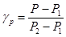
где gр - плотность инъекционного раствора, г/см3; Р - масса сосуда с раствором, г; Р1 - масса пустого сосуда, г; Р2 - масса сосуда с водой, г;
б) Ареометром АГ-2 (АГ-ЗПП)
Плотность инъекционных растворов с растекаемостью > 18 см определяется ареометром АГ-2.
Для измерения плотности раствор наливают в стакан так, чтобы уровень достигал сливных отверстий стакана, после чего соединяют стакан с поплавком. Затем собранный ареометр обмывают и опускают в сосуд с чистой пресной водой. Плотность раствора отсчитывают по шкале.
Определение подвижности (растекаемости) раствора
Растекаемость раствора определяется по диаметру его расплыва. С этой целью кольцо от прибора для определения сроков схватывания (прибор Вика) устанавливается широкой частью на чистое горизонтально расположенное стекло. Под стекло кладется лист бумаги с начерченными на нем концентрическими кругами через 1 см. Центр кольца совмещается с центром окружности. Раствор наливается в это кольцо до краев. Резким движением кольцо поднимается вверх, и раствор растекается по стеклу.
Диаметр растекания измеряется по двум взаимно перпендикулярным плоскостям. За диаметр расплыва принимается средняя из двух полученных величин. Полученный диаметр расплыва сравнивается с заданным, после чего при необходимости растекаемость раствора корректируется добавлением воды или добавками цемента, песка или золы.
Определение сроков схватывания растворов
Сроки схватывания инъекционных растворов определяют прибором Вика. Иглу прибора погружают в цементный раствор через каждые 5 мин до начала схватывания и через каждые 15 мин в последующее время до конца схватывания. Началом схватывания считают время от начала затворения до того момента, когда игла не будет доходить до дна прибора на 0,5 - 1 мм. Концом схватывания считают время от начала затворения до момента, когда игла будет опускаться в раствор не более чем на 1 мм.
Определение водоотделения растворов
Водоудерживающую способность тампонажных растворов в статическом состоянии определяют в двух калиброванных цилиндрах объемом 250 см3 каждый. Для предотвращения испарения жидкости цилиндр сверху покрывают смоченной в воде фильтровальной бумагой. Изменения объема осадка измеряют через каждые 5 мин до тех пор, пока водоотделение не прекратится.
Водоудерживающая способность раствора характеризуется коэффициентом водоотделения, который определяется отношением объема отделившейся жидкости к объему залитого в цилиндр раствора.
Расчет коэффициента водоотделения производится по формуле:
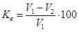
где Кв - коэффициент водоотделения, %; V1 - первоначальный объем раствора, см3; V2 - объем осевшего раствора, см3.
Необходимо учитывать, что на величину водоотделения влияют высота и диаметр мензурки, поэтому следует всегда проводить опыты при одинаковых условиях и использовать один вид мензурок.
Определение расслаиваемости раствора
Расслаиваемость раствора определяется на специальном приборе (рис. П.1). Прибор представляет собой стальную цилиндрическую форму, состоящую из трех частей высотой 250 мм и диаметром 70 мм каждая, собранных на резиновых прокладках и стянутых откидными болтами.
Рис. П.1. Схема установки для определения расслаиваемости растворов:
1 - цилиндрическая форма; 2 - испытуемый раствор; 3 - резиновые прокладки; 4 - тяга
Форма заполняется испытуемым раствором и вибрируется в течение 30 с. Затем растворную смесь выкладывают из каждой части формы в отдельные сосуды. Растворную смесь, находящуюся в средней части, для испытаний не используют. Далее из каждого сосуда после тщательного перемешивания берут пробы для определения растекаемости раствора.
Расслаиваемость выражается разностью величин (в сантиметрах), характеризующих растекаемость верхнего и нижнего слоев раствора.
Определение выхода тампонажного камня
Выход камня тампонажного раствора после затвердевания выражают в процентах и определяют для растворов любой консистенции при помощи градуированного цилиндра вместимостью 100 см3.
Раствор наливают в мерный сосуд до черты 100 см3 и после отстаивания в течение 1 - 1,5 ч определяют объем осадка. Процентное отношение объема осадка к первоначальному объему и характеризует величину выхода тампонажного камня.
Расчет производится по формуле
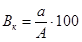
где Вк - выход камня, %; А - объем раствора в цилиндре, мл; а - объем осадка, мл.
Определение прочности образцов на сжатие
Предел прочности на сжатие определяют испытанием образцов-кубов или образцов-цилиндров, изготовленных из растворов с последующим твердением в заданных условиях или выбуренных из заобделочного пространства.
Размер ребра образца куба должен быть 20, 70, 100, 150 мм. Из кернов изготавливаются образцы цилиндрической формы с параллельными торцевыми поверхностями с соотношением высоты и диаметра h/d = 2.
Для испытания на сжатие образцы устанавливают одной из боковых граней на опорную плиту пресса и центрируют. Скорость изменения общей нагрузки на образец должна обеспечивать возрастание напряжения в образце со скоростью (0,6±0,2) МПа в секунду до его разрушения.
Прочность на осевое сжатие (Rсж), МПа, вычисляют для каждого образца по формуле:
при испытании образцов-кубов
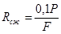
при испытании образцов цилиндров
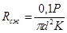
где Р - разрушающая нагрузка, кгс/см2; F - площадь сечения образца, см2; d = диаметр цилиндрического образца, см; К - поправочный коэффициент при соотношении h/d ¹ 2, К = 0,754 - 0,492 (d/h).
Определение коэффициента фильтрации тампонажного камня
Коэффициент фильтрации тампонажного камня определяется на установке любой конструкции, способной создавать необходимое давление воды (не менее 1,5 МПа) на рабочую площадь образцов и поддерживать это давление в течение всего времени испытания с точностью 5 - 10%.
Для испытания на водонепроницаемость по истечению требуемого срока (3,7 или 28 сут.) образцов, отобранных при приготовлении раствора или выбуренных из заобделочного пространства, рекомендуется применять установку АКМ-2. Установка основана на принципе постоянного расхода воды через испытываемый цилиндрический образец тампонажного камня диаметром 30 мм и высотой 50 мм. Торцевые поверхности образца тщательно очищают. Образец устанавливается в кернодержателе и обжимается резиновыми манжетами. После установки образца гидравлическое давление доводится до 0,05 МПа и поддерживается на этом уровне в течение 1 ч. Затем через каждый час давление повышается на 0,1 МПа до величины 0,3 МПа. Под таким давлением образец выдерживается 24 ч. Если после этого образец не фильтрует воду, то давление опять повышается через каждый час на 0,1 МПа до тех пор, пока не появится фильтрат. Если при максимальном давлении (не менее 1,3 МПа) в течение 96 ч фильтрат не наблюдается, испытание прекращают.
Коэффициент фильтрации тампонажного камня определяется по формуле:
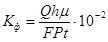
где Кф - коэффициент фильтрации, см/с; Q - количество фильтрата (профильтровавшейся через образец воды), см3; h - высота испытываемого образца, см; F - площадь поперечного сечения образца, см2; Р - давление воды на образец, фиксируемое манометром установки, МПа; t - время фильтрации, с; m - динамическая вязкость воды при 20°С, m = 1 Сп.
|
Назначение добавок |
Наименование добавок |
Сокращенное обозначение |
Рекомендуемое количество в пересчете на сухое вещество в % к массе цемента |
Дополнительный эффект от применения добавки |
Нормативно-техническая документация на добавку |
|
Стабилизирующие и пластифицирующие добавки увеличивают подвижность, однородность (нерасслаиваемость), выход тампонажного камня |
Сульфитно-дрожжевая бражка |
СДБ |
0,1 - 3,0 |
Замедляет схватывание и твердение, понижает водоотдачу, понижает усадочные деформации |
ОСТ 13-183-83 |
|
Смола нейтрализованная воздухововлекающая |
СНВ |
0,01 - 0,02 |
Повышает плотность и водонепроницаемость |
ТУ 81-05-75-69 |
|
|
Суперпластификатор |
С-3 |
0,2 - 1,2 |
Снижает В/Ц, повышает прочность, водонепроницаемость |
ТУ 6-14-625-80 |
|
|
Пластификатор |
ЛСТМ-2 |
0,2 - 0,3 |
То же |
ТУ 13-04-600-80 |
|
|
Силикат натрия (жидкое стекло) |
(ЖС) |
5 - 15 |
Ускоряет сроки схватывания, снижает прочность тампонажного камня |
||
|
Зола-унос |
ЗУТЭ |
5 - 30 |
Снижает водоотдачу, повышает водонепроницаемость |
ГОСТ 25818-73 |
|
|
Бентонитовая глина |
Б |
5 - 30 |
То же |
ТУ 39-01-08-158-81 |
|
|
Ускорители твердения и схватывания - сокращают сроки схватывания, предотвращают замерзание растворов |
Сульфат натрия |
СН |
0,5 - 5,0 |
- |
ГОСТ 6318-77, ТУ 38-10 |
|
Хлорид кальция |
ХК |
0,5 - 5,0 |
Повышает подвижность раствора |
||
|
Нитрат натрия |
НН |
2,0 - 3,0 |
Повышает прочность тампонажного камня |
ГОСТ 828-77Е |
|
|
Поташ |
П |
до 5,0 |
- |
||
|
Замедлители сроков схватывания |
Сульфитно-спиртовая бражка |
ССБ |
0,15 - 0,25 |
- |
ОСТ-13-183-83 |
|
Этилсиликонат натрия |
ГКЖ-10 |
0,1 - 0,2 |
Повышает водонепроницаемость и морозостойкость |
ТУ 6-02-696-72 |
|
|
Метилсиликонат натрия |
ГКЖ-11 |
0,1 - 0,2 |
|
ТУ 6-02-696-72 |
|
|
Полигидросилоксан |
ГКЖ-94 м |
0,05 - 0,2 |
Применяется в условиях жаркого климата |
ГОСТ 10834-34 |
|
|
Уплотняющие, повышающие прочностные, деформационные, адгезионные свойства тампонажного камня |
Суперпластификатор |
С-3 |
0,2 - 1,2 |
|
ТУ 6-14-625-80 |
|
Дивинилстирольный латекс |
СКС-65 ГП-Б |
1 - 2 |
Замедляет сроки схватывания раствора |
ТУ 38-3033-73 |
|
|
Повышающие дисперсность глинистых растворов |
Кальцинированная сода |
КС |
1 - 4 |
Снижает водоотделение, повышаетность растворов |
ГОСТ 5100-73 |
|
Силикат натрия |
СН (ЖС) |
1 - 5 |
ГОСТ 25818-73 |
* Допускается использование других видов добавок, количество и пригодность которых устанавливается лабораторными работами по подбору составов растворов. Правила приготовления водных растворов добавок, расчет их количества, плотность растворов добавок в зависимости от концентрации приведены в гл. 4 и приложении 2 «Пособия по применению химических добавок при производстве сборных железобетонных конструкций и изделий» к СНиП 3.09.01-85.
Цементные растворы
Расход цемента на приготовление 1 м3 раствора при заданном водоцементном отношении (В/Ц)
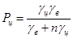
где gц - плотность цемента, т/м3 (2,9 - 3,1 т/м3); gв - плотность воды - 1 т/м3; n - водоцементное отношение (В/Ц).
Глинистые растворы
Расход глины для получения раствора заданной плотности
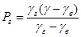
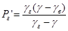
где Рг - расход глины на 1 м3 глинистого раствора, т; Рг¢ - то же на 1 м3 воды; gг - плотность глины, т/м3 (2,6-2,8 т/м3); gв - плотность воды,. т/м3; g - требуемая плотность глинистого раствора, т/м3.
Расход глины в воздушно-сухом состоянии для увеличения плотности, раствора
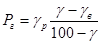
где gp - плотность имеющегося раствора, т/м3.
Расход воды для уменьшения плотности раствора
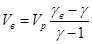
где Vв - объем добавляемой воды, м3; Vр - объем раствора, м3.
Многокомпонентные тампонажные растворы
По заданному соотношению компонентов Ц : П : Г : З : В определяют плотность тампонажного раствора, т/м3
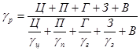
где Ц, П, Г, З, В, - соответственно количество цемента, песка, глины, золы и воды в частях при принятом их соотношении в смеси; gц - плотность цемента, т/м3 (2,95 - 3,10 т/м3); gп - плотность песка, т/м3 (2 - 2,5 т/м3); gг = плотность суглинка, глины, т/м3 (2,55 - 2,65 т/м3); gз - плотность золы, т/м3 (2,0 - 2,2 т/м3).
Массу составляющих компонентов, т, для приготовления 1 м3 раствора определяют по формулам:
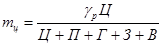
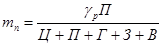
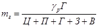
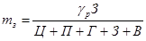
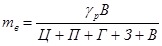
Примеры расчета потребности материалов при переходе от лабораторных к производственным объемам
Тоннель со сборной железобетонной обделкой сооружается в обводненных грунтах. Выбор составов раствора для первичного и контрольного нагнетания производится в соответствии с табл. 1 настоящих Правил.
А. Раствор для первичного нагнетания
В результате лабораторных исследований подобран состав раствора Ц : П : З (цемент : песок : зола) = 1 : 2 : 1 при В/Ц = 0,8 (вода/цемент) с добавкой ускорителем схватывания фтористым натрием - 3% от массы цемента, удовлетворяющий следующим требованиям:
Подвижность (растекаемость раствора, см) .……………………… 8
Выход тампонажного камня, %.......……………………………….. 96
Сроки схватывания, ч-мин:
начало ...............……………………………………………………... 0 - 20
конец ..............………………………………………………………. 2 - 30
Прочность на сжатие тампонажного камня на 28 сут, Мпа .......... 26,0
Коэффициент фильтрации тампонажного камня, см/с .................. 8,5×10-7
Расчет производится из условия, что плотность цемента gц = 3,0 т/м3, песка gп = 2,6 т/м3, золы gз = 2,1 т/м3. Расход компонентов определяется по вышеприведенным формулам или сводится в табл. 3.1.
Таблица 3.1
|
Масса Р, кг |
Объем V = P/g, л |
Расход материалов на 1 м3 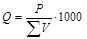 , кг |
|
|
Вода |
0,8 |
0,8 |
800 : 2,41 = 332 |
|
Цемент |
1 |
1 : 3,0 = 0,33 |
1000 : 2,41=415 |
|
Песок |
2 |
2 : 2,6 = 0,77 |
2000 : 2,41=830 |
|
Зола |
1 |
1 : 2,1 =0,48 |
1000 : 2,41=415 |
|
Фтористый натрий |
0,03 |
0,03 |
30 : 2,41 = 12,4 |
|
Общая масса 3,83 |
Общий объем 2,41 |
||
Плотность раствора 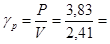
Б. Раствор для контрольного нагнетания
В результате лабораторных исследований подобран состав раствора Ц : П = 1 : 0 при В/Ц = 1,33 с добавками бентонитового глинопорошка - 10% и жидкого натриевого стекла (силиката натрия) - 2,3% от массы цемента, удовлетворяющий следующим требованиям:
Растекаемость раствора, см ......…………………………………… 11
Водоотделение, % ..........…………………………………………… 0
Выход тампонажного камня, % ....………………………………… 100
Сроки схватывания, ч-мин:
начало .............……………………………………………………….. 0 - 40
конец ..............………………………………………………………… 4 - 00
Прочность на сжатие тампонажного камня на 28 сут, Мпа .............. 2,5
Коэффициент фильтрации тампонажного камня, см/с ................…. 1,5×10-10
Расчет производится из условия, что плотность цемента gц = 3,0 т/м3, бентонитового глинопорошка gб = 2,65 т/м3, жидкого стекла gс = 1,45 т/м3. Расчет сводится в табл. 3.2.
Таблица 3.2
|
Масса Р, кг |
Объем V = P/g, л |
Расход материалов на 1 м3 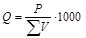 |
|
|
Вода |
1,33 |
1,33 |
1330 : 1,717 = 775 |
|
Цемент |
1,0 |
1,0 : 3,0 = 0,333 |
1000 : 1,717 = 582 |
|
Бентонит |
0,10 |
0,1 : 2,65 = 0,038 |
100 : 1,717 = 58 |
|
Жидкое стекло |
0,023 |
0,023 : 1,45 = 0,016 |
23 : 1,717 = 13,4 или 9,2 л |
|
Общая масса 2,453 |
Общий объем 1,717 |
|
|
Плотность раствора 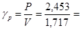
Способы хранения и транспортировки цемента, глины и добавок должны отвечать требованиям соответствующих ГОСТов, ТУ, инструкций.
Материалы и добавки должны иметь паспорта, гарантирующие их соответствие техническим требованиям. К складам добавок предъявляют повышенные требования по технике безопасности и пожарной безопасности.
Хлорид кальция (ХК) поставляется в виде обезвоженного, плавленого, жидкого продукта: обезвоженный, плавленый ХК - в металлических барабанах, жидкий - в бочках.
Нитрат натрия (НН) жидкий поставляют в деревянной или металлической таре.
Хлорид кальция и нитрат натрия в виде порошка хранят в условиях, исключающих увлажнение, жидкий - при температуре не ниже точки замерзания.
Сульфат натрия (СН) и поташ (П) поставляют в виде порошка, или гранул в расфасованном виде, хранят в закрытых складских помещениях, защищенных от влаги.
Сульфитно-дрожжевая бражка (жидкая) поставляется в металлической таре, твердая и порошкообразная - в бумажных мешках, хранят в закрытых, проветриваемых помещениях, располагая мешки в один ряд по высоте.
Кремнийорганические соединения (ГКЖ-10, ГКЖ-11) поставляют в металлической таре и хранят при t = 0 - 30°С не более 6 мес., ГКЖ-94 поставляется в металлической или стеклянной таре и хранится при t = 0 - 20°С не более 12 мес.
Смола нейтрализованная воздухововлекающая (СНВ) поставляется в деревянных бочках, хранят в помещениях, исключающих увлажнение.
Пластификаторы (С-3, ЛСТМ-2) жидкие поставляются в металлической таре, порошкообразные - в бочках или мешках, хранятся в помещениях, исключающих увлажнение.
Кальцинированная сода (КС) поставляется в виде порошка в многослойных бумажных мешках, исключающих увлажнение.
Жидкое стекло (ЖС) поставляется в металлической таре, хранится в закрытых проветриваемых помещениях.
|
Показатели |
Турбулентные смесители |
Растворомешалки |
Смесители непрерывного действия |
||||||
|
СБ-43 |
СБ-133 |
СБ-81 |
лопастные |
турбинные |
|||||
|
СО-46 |
ЛРМ-350 |
РМ-500 |
РМ-750 |
СО-201 |
CO-211 |
||||
|
Вместимость, л |
80 |
100 |
1100 |
80 |
350 |
500 |
750 |
- |
- |
|
Производительность, м3/ч |
2 - 2,6 |
3 - 4 |
50 |
1 - 2 |
2 |
5 |
10 |
1,5 |
3,0 |
|
Частота вращения смесительного вала, с-1 |
9,2 |
9,2 |
6,8 |
0,53 |
1 |
8,3 |
9,5 |
- |
- |
|
Время перемешивания, с |
10 - 30 |
10 - 30 |
10 - 30 |
180 |
60 |
120 |
120 |
30 |
30 |
|
Мощность электродвигателя, кВт |
3 |
4 |
40 |
1,5 |
1 |
4,5 |
7,0 |
2,2 |
12 |
|
Габаритные размеры, мм: |
|||||||||
|
длина |
1470 |
1120 |
2585 |
1535 |
1200 |
1500 |
2000 |
1500 |
1700 |
|
ширина |
525 |
660 |
1610 |
570 |
1200 |
1400 |
1100 |
700 |
740 |
|
высота |
825 |
1000 |
1860 |
1140 |
1200 |
1300 |
1000 |
1350 |
1350 |
|
Масса, кг |
160 |
190 |
1900 |
200 |
200 |
350 |
512 |
140 |
200 |
|
Показатели |
РН-1 |
СО-126 |
|
Производительность, м3/ч |
1 - 2 |
2,5 |
|
Объем рабочего резервуара, л |
235 |
250 |
|
Максимальное давление, МПа |
0,6 - 0,8 |
0,6 - 0,8 |
|
Расход сжатого воздуха, м3/мин |
2,2 - 2,5 |
2,2 - 2,5 |
|
Мощность электродвигателя кВт |
5,5 |
7,5 |
|
Внутренний диаметр растворовода, мм |
65 |
50, 65 |
|
Габаритные размеры, мм: |
||
|
длина |
2400 |
1800 |
|
ширина |
1000 |
950 |
|
высота |
1430 |
1350 |
|
Масса, кг |
1224 |
850 |
Рекомендуемое
|
Показатели |
СО-52 |
СО-57 |
СО-85 |
СО- 180 |
Р-13 |
|
Производительность, м3/ч |
1 |
2 |
2,4 |
2 |
4,8 |
|
Вместимость смесителя (побудителя), л |
30 |
80 |
80 |
80 |
170 |
|
Тип смесителя |
- |
СО-46 |
СО-46 |
СО-46 |
- |
|
Вместимость приемного бункера, л |
30 |
100 |
100 |
100 |
200 |
|
Тип насоса |
СО-152 |
СО-29 |
СО-29 (или CO-167) |
- |
- |
|
Подача, м3/ч |
1 |
2 |
2 (4) |
2 |
- |
|
Давление, МПа |
1,5 |
1,5 |
1,5 - 3,5 |
1,5 |
3,5 - 5,0 |
|
Внутренний диаметр растворовода, мм |
38 |
38 - 50 |
38 - 50 |
38 - 50 |
50 |
|
Установленная мощность, кВт |
1,85 |
5,25 |
9,1 |
- |
7,5 |
|
Габаритные размеры, мм: |
|||||
|
длина |
1850 |
1760 |
3160 |
1465 |
3200 |
|
ширина |
1210 |
1350 |
1460 |
1360 |
1700 |
|
высота |
835 |
1400 |
1510 |
1160 |
1570 |
|
Масса, кг |
330 |
750 |
1025 |
680 |
980 |
Примечание. Штукатурные агрегаты оснащены виброситом для процеживания раствора.
|
Показатели |
Растворонасосы |
|||||||
|
диафрагменные |
поршневой |
винтовой |
поршневой |
плунжерные |
||||
|
СО-29Б |
СО-30Б (С-263) |
СО-10* (С-317) |
СО-167 |
СО-200** |
НБ-32 |
НБ-160/63 |
НКН-1 |
|
|
Назначение |
первичное и контрольное нагнетание |
контрольное нагнетание |
||||||
|
Производительность, м3/ч |
2 |
4 |
6 |
2,4 |
2,5 |
17,6 - 23 |
0,6 - 9,7 |
1 - 4 |
|
Макисимальное давление, МПа |
1,5 |
1,5 |
1,5 |
3,5 |
3,0 |
3,2; 4,0 |
4,5; 6,3 |
1,5 |
|
Число плунжеров (цилиндров), шт. |
1 |
1 |
1 |
1 |
- |
2 |
3 |
2 |
|
Диаметр плунжеров, мм |
80 |
90 |
110 |
- |
- |
60, 90, 100 |
70, 45 |
- |
|
Мощность электродвигателя, кВт |
2,2 |
4 |
7,5 |
7,5 |
4 |
25 |
11 |
3,2 |
|
Внутренний диаметр растворовода, мм |
38 |
38,50 |
50,65 |
38,50 |
38,50 |
50 |
38 |
38 |
|
Габаритные размеры, мм: |
||||||||
|
длина |
1160 |
1285 |
1040 |
1390 |
2700 |
1800 |
1230 |
1480 |
|
ширина |
470 |
500 |
570 |
460 |
900 |
740 |
830 |
1050 |
|
высота |
760 |
805 |
1025 |
1025 |
900 |
1455 |
1470 |
680 |
|
Масса, кг |
195 |
254 |
400 |
375 |
150 |
1040 |
520 |
680 |
* Растворонасос СО-10 может оснащаться приставкой Марчукова прямого действия, позволяющей нагнетать малоподвижные растворы.
** Насосная установка СО-200 в комплексе со смесителем СО-201 (СО-211) позволяет осуществить непрерывное приготовление и нагнетание раствора.
Схема технологической тележки ТН 16 Гп для первичного нагнетания раствора представлена на рис. П.9.1.
Рис. п.9.1. Схема технологической тележки для нагнетания раствора:
1 - балка для подвески тельфера; 2 - загрузочный люк; 3 - рама для монорельса; 4 - растворонагнетатели; 4 - рама тележки
Рис. П.9.2. Схема технологической тележки для контрольного нагнетания:
1 - ходовая часть; 2 - боковые площадки; 3 - верхняя площадка; 4 - вентиляционный трубопровод; 5 - электровоз
Техническая характеристика
Тележка предназначена для работы в тоннеле диаметром, мм .................. 5100
Тележка оснащена двумя растворонагнетателями РН-1, м3 ...............…… 0,235
Грузоподъемность, т ............. ………………………………………………..3,2
Установленная мощность, кВт ........……………………………………….. 18
База, м ..................…………………………………………………………… 4,5
Габаритные размеры, мм:
длина .............…………………………………………………………… 7800
ширина ................……………………………………………………….. 4600
высота ...............…………………………………………………………. 4700
Масса, т ................……………………………………………………………. 22
Схема инвентарной тележки для контрольного нагнетания представлена на рис. П.9.2.
Техническая характеристика
Грузоподъемность, т ..........….. 1,0
Колея, мм ..............……………. 3130
База, м ................………………. 3,7
Механизм передвижения .......... ручная лебедка
Габаритные размеры, мм:
длина ..............…………….. 6200
ширина ..............………….. 4700
высота ...............…………... 3500
Масса, т ...............……………… 3,1
Пневматическая торцевая опалубка компонуется из мягких оболочек цилиндрической формы различных диаметров и длины со сферическими или плоскими торцами.
Оболочка (Рис. П.10.1) состоит из силовой покрышки, изготовленной из высокопрочной капроновой ткани, и герметичной резиновой камеры со штуцером. К штуцеру присоединен резиновый рукав с запорным вентилем.
Схема установки пневматической торцевой опалубки в перегонном тоннеле диаметром 5,5 м конструкции ДГИ представлена на рис. П.10.2.
Техническая характеристика
Количество оболочек, шт ....... 6
Диаметр оболочки, м ..........… 0,4
Длина, м ..............……………. 2,2 (2)
Рабочее давление, Мпа ........... 0,3 - 0,4
Масса оболочки, кг ...........….. 8
То же комплекта, кг..........….. 52
Рис. П.10.1. Конструкция мягкой оболочки:
1 - силовая покрышка; 2 - резиновая камера; 3 - штуцер; 4 - резиновый рукав; 5 - вентиль
Рис. П.10.2. Схема установки пневматической торовой опалубки:
1 - сборная обделка; 2 - основная оболочка; 3 - вспомогательная оболочка; 4 - рукав с вентилем
В комплект входят вспомогательные оболочки диаметром 0,2 м, длиной 1,2 м, укладываемые на основные (если зазор между обделкой и грунтом превышает 0,4 м). Чтобы не превышать рабочее давление в мягких оболочках, заполнение их сжатым воздухом рекомендуется осуществлять через регулятор типа 112-25 УХЛ-4, устанавливаемый на основной магистрали сжатого воздуха.
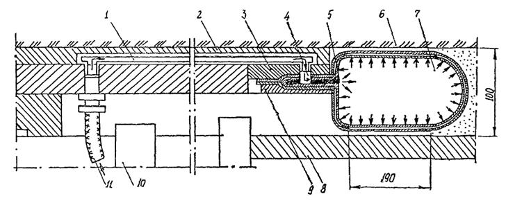
Рис. П.11 Узел схемы ПТУ-С в продольном разрезе:
1 - трубка наружной пневмосистемы; 2 - защитная накладка; 3 - базисное кольцо; 4 - воздухопроводящее отверстие; 5 - воздухоприемное устройство; 6 - грунт; 7 - полость секции рабочего органа; 8 - обделка; 9 - прижимная планка крепления; 10 - корпус щитового домкрата; 11 - трубка или шланг внутренней пневмосистемы
Рекомендации даны на производство работ по нагнетанию растворов за обделку сооружений, расположенных в вечномерзлых, мерзлых и искусственно замороженных грунтах с температурой ниже 5°С.
Для приготовления растворов, твердеющих в условиях отрицательных, ниже 0°С, температур, следует применять портландцементы, соответствующие требованиям ГОСТ 10178-85 с содержанием трехкальциевого алюмината С3А менее 8%. Для растворов, твердеющих при температуре от 0 до +5°С, следует использовать цементы с содержанием С3А более 8%.
Использование шлакопортландцемента, пуццоланового, расширяющегося и гидрофобного цементов разрешается только после проведения лабораторных испытаний, устанавливающих сроки схватывания раствора в конкретных условиях строительства.
Заполнять заобделочное пространство следует растворами с температурой от +20 до +35°С.
Для приготовления цементно-песчаных растворов следует применять песок с крупностью от 1,5 до 2,0. Дли приготовления раствора рекомендуется использовать отогретый песок, не допускаются включения в него льда и снега, смерзшихся комьев и наледи. Не допускается использование растворов с В/Ц>2. Для снижения водоцементного отношения рекомендуется использовать суперпластификаторы.
Для приготовления растворов, твердеющих в условиях отрицательных температур, рекомендуется использовать противоморозные, стабилизирующие, повышающие морозостойкость и водонепроницаемость добавки:
в качестве противоморозных - хлористый кальций (до 15% от воды затворения), поташ (до 5% от массы цемента), этиленгликоль «Арктика» по табл. П.12.1. и П.12.2;
для стабилизации растворов при транспортировке - кремнегель (полупродукт суперфосфатного производства) в количестве 0,5 - 2% сухого вещества от массы цемента;
для повышения морозостойкости и водонепроницаемости - ГКЖ-11, ГКЖ-94 в количестве 0,015 - 0,03% сухого вещества от массы цемента;
для снижения водоцементного отношения - суперпластификатор С-3 в количестве 0,4 - 0,7% от массы цемента.
Цементно-песчаные растворы с использованием добавок «Арктика» и этиленгликоль следует назначать по табл. п. 12.1.
В зависимости от температуры грунта содержание добавки «Арктика» рекомендуется назначать по табл. П.12.2.
В цементных растворах с добавкой хлористого кальция необходимо применять добавку СДБ, содержание которой в зависимости от температуры грунта следует назначать в соответствии с табл. П.12.3.
Применение поташа в качестве противоморозной добавки не должно превышать 5 % от массы цемента.
Госты и технические условия на добавки приведены в приложении 2.
При работе с растворами, включающими химические добавки, следует обращать особое внимание на исправность электропроводки и электроинструмента.
При работе с горячими растворами, а также с горячим воздухом следует применять меры по предупреждению ожогов (защитные очки, спецодежда и т.п.).
Таблица П.12.1
|
Содержание добавки, % от воды затворения |
||||
|
Ц |
П |
В |
«Арктика» |
Этиленгликоль |
|
1 |
- |
0,8 |
0,5 |
1,5 |
|
1 |
- |
1,0 |
1,0 |
2,0 |
|
1 |
- |
2,0 |
2,0 |
5,0 |
|
1 |
1 |
0,6 |
1,0 |
2,0 |
|
1 |
2 |
0,8 |
1,5 |
3,0 |
|
1 |
3 |
0,8 |
3,0 |
5,0 |
Таблица П.12.2
|
Содержание добавки «Арктика», % от воды затворення |
|
|
2 - 4 |
0 - 0,3 |
|
0 - 2 |
0,25 - 0,5 |
|
0 - 1 |
0,5 - 1,0 |
|
минус 1 - минус 3 |
1,0 - 2,0 |
|
минус 3 - минус 5 |
2,0 - 5,0 |
|
минус 5 - минус 7 |
5,0 - 10,0 |
Таблица П.12.3
|
Содержание CaCI. % от воды эатворения |
Содержание СДБ, % от массы цемента |
|
|
2 - 4 |
0 - 2 |
0,2 - 0,4 |
|
0 - 4 |
2 - 3 |
0,2 - 0,4 |
|
0 - минус 3 |
3 - 6 |
0,2 - 0,4 |
|
минус 3 - минус 5 |
6 - 9 |
- |
|
минус 5 - минус 10 |
9 - 12 |
- |
|
минус 10 - минус 15 |
12 - 16 |
- |
Гидравлическое опробование контрольных скважин проводится для определения:
проницаемости материала заобделочного пространства и грунта (удельное водопоглощение);
условий, при которых при нагнетании раствора или воды происходит гидравлический разрыв грунтов или деформация элементов тоннельной обделки.
По данным гидроопробования в зонах контрольных скважин определяется качество работ по нагнетанию в соответствии с п. 7.5 настоящих Правил.
Удельное водопоглощение выражается технической единицей - л/мин×м×м вод.ст.
1 л/мин×м м×вод. ст. соответствует нагнетаемому расходу воды 1 л/мин, приходящемуся на 1 м длины опробуемой зоны и на напор воды, равной 1 м.
Удельное водопоглощенне рассчитывается по формуле:
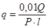
где Q - расход воды в опробуемой зоне, л/мин; Р - давление воды в зоне, МПа (1 Мпа = 10 кгс/см2); l - длина опробуемой зоны, м.
Давление воды в опробуемой зоне определяется по формуле:
Р = Рн - Ргидр. - Рг.ст., МПа,
где Рн - давление на насосе, МПа; Ргидр. - потери давления на преодоление гидравлических сопротивлений растворовода, МПа; Рг.ст. - гидростатический напор грунтовых вод, МПа.
Гидравлические потери в раствороводе определяются по разнице показаний на насосе и устье скважины, гидростатический напор - по манометру на устье скважины при перекрытой запорной арматуре.
Длина опробуемой зоны l принимается равной длине участка скважины, через который вода при гидроопробовании поступает за обделку: нижняя граница - низ инъектора, верхняя граница - забой скважины.
Гидравлическое опробование следует производить при максимально допустимых величинах давления и расхода воды многоступенчато - при 3-4 повышающих ступенях нагнетания и 2-3 понижающих ступенях давления. На каждой ступени давление воды после стабилизации расхода выдерживается не менее 10 мин, в течение которых производится 2-3 измерения расхода. Если по 2-3 замерам разность значений не превышает ±20%, производится нагнетание на новой ступени давления.
Для определения условий гидроразрыва грунта или деформации обделки проводится также многоступенчатое гидравлическое опробование, но давление нагнетания доводится до максимального значения.
Путем сравнения давления нагнетания и расходов воды на повышающих и понижающих ступенях можно зафиксировать режимы фильтрации (ламинарный, соответствующий тонкой трещиноватости, и турбулентный, соответствующий крупной трещиноватости), кольматацию, размыв или гидроразрыв тампонажного материала или грунта.
Строительство _______________________________
Участок ____________________________________
|
Дата |
Наименование сооружения |
Место установки инъектора |
Вид и марка цемента |
Состав раствора, т |
Расход раствора, м3 |
Давление нагнетания, МПа |
Смена, бригада, выполнившая работу |
Подписи начальника смены и начальника участка |
Примечание |
|||
|
номер кольца или пикета |
номер блока (тюбинга) или трубки |
цемент |
инертные |
добавки |
||||||||
Примечания: 1. Журнал заполняется начальником смены и хранится у начальника участка.
2. Счет блоков (тюбингов) в кольце ведется по часовой стрелке, начиная от замкового.
Строительство ______________________________
Участок ___________________________________
|
Дата |
Наименование сооружения |
Место установки инъектора |
Вид и марка цемента |
Состав раствора, т |
Расход раствора, м3 |
Давление нагнетания, МПа |
Смена, бригада, выполнившая работу |
Подписи начальника смены и начальника участка |
Примечание |
||
|
номер кольца или пикета |
номер блока (тюбинга) или трубки |
цемент |
добавки |
||||||||
Примечания. 1. Журнал заполняется начальником смены и хранится у начальника участка.
2. Счет блоков (тюбингов) в кольце ведется по часовой стрелке по ходу пикетажа, начиная от замкового.
3. Учет цемента для повторно-контрольного нагнетания производится по накладным.
Акт освидетельствования скрытых работ по нагнетанию раствора за обделкуВыполнение в ______________________________________________________________ (наименование сооружения) г. ______________________ "___" _______________________ 19__г. Комиссия в составе: представителей строительно-монтажной организации: главного инженера строительства ________________________________________ начальника участка ____________________________________________________ маркшейдера _________________________________________________________ (фамилия, и., о.) представителя технического надзора заказчика: ___________________________________________________________________________ (фамилия, имя, отчество, должность) ознакомилась с исполнительной документацией, произвела осмотр работ, выполненных ___________________________________________________________________________ (наименование ___________________________________________________________________________ строительно-монтажной организации) и составила настоящий акт о нижеследующем: 1. К освидетельствованию и приемке работ предъявлены работы по первичному, контрольному нагнетанию ____________________________________________________ (ненужное зачеркнуть) за сборную обделку от кольца № __________________ до кольца № _________________ всего _______________ колец _________________________________________________ За монолитную бетонную обделку от пикета ________________ до пикета ___________ на длине __________________ м. Всего ___________________ м. 2. Работы выполнены по проекту ____________________________________________ (наименование проектной ___________________________________________________________________________ организации, № чертежей и даты их составления) 3. Для приготовления растворов использовались _______________________________ ___________________________________________________________________________ (наименование и результаты входного контроля материалов) 4. Для нагнетания применялся ______________________________________________ (вид раствора, ___________________________________________________________________________ соотношение компонентов в растворе, основные ___________________________________________________________________________ характеристики раствора) 5. Приготовление и нагнетание раствора производилось ________________________ ___________________________________________________________________________ (тип смесительного и нагнетательного оборудования) и закончилось при давлении ______________________ МПа по манометру. 6. Работу производила бригада т. ____________________________________________ (фамилия, и., о. бригадира) под надзором прораба т. ______________________________________________________ (фамилия, и., о. прораба) 7. Результаты опробования контрольных скважин ______________________________ (номер скважин, ___________________________________________________________________________ номер кольца (пикета), поглощение воды и цементного раствора, ___________________________________________________________________________ характеристики образцов керна) 8. Дата начала работ _______________________________________________________ 9. Дата окончания работ ___________________________________________________ Решение комиссии Работы выполнены в соответствии с проектом, стандартами, строительными нормами и правилами и отвечают требованиям их приемки. Предъявленные к приемке работы, указанные в п. 1 настоящего акта, приняты с оценкой качества ___________________________________________________________ На основании изложенного разрешается производство последующих работ по устройству (монтажу) ________________________________________________________ ___________________________________________________________________________ (наименование работ и конструкций) Примечание. Нагнетание за обделку принимается без лотковой части. Нагнетание в лотковую часть учитывается и принимается при подготовке лотка для укладки жесткого основания. Представители строительно-монтажной организации _____________ подписи _____________ подписи _____________ Представитель технического надзора заказчика _____________ подпись |
1. СНиП III-44-77 «Тоннели железнодорожные, автодорожные и гидротехнические. Метрополитены». Утверждены Госстроем СССР 5 мая 1977 г.
2. Правила безопасности при строительстве подземных гидротехнических сооружений (2 изд.). Утверждены Госгортехнадзором СССР 29 июля 1969 г. и Министерством энергетики и электрификации СССР 18 июля 1968 г.
3. Правила устройства и безопасной эксплуатации грузоподъемных кранов (перерабатываются). МПС, Минтрансстрой, ЦК профсоюза железнодорожного транспорта, 17 апреля 1973 г.
4. Правила техники безопасности при эксплуатации электроустановок потребителей. Утверждены Главгосэнергонадзором, Минэнерго СССР, 1984.
5. Инструкция о расследовании и учете несчастных случаев на производстве на железнодорожном транспорте и транспортном строительстве. Утверждены ЦК профсоюза железнодорожного транспорта и транспортного строительства, МПС, Минтрансстрой СССР, 1985.
6. ОСТ 35-29-86 ССБТ. Машины и оборудование для транспортного строительства. Требования безопасности.
7. ОСТ 35-25-84 ССБТ. Организация обучения и проверки знаний по безопасности труда работников транспортного строительства. Основные положения.
8. ОСТ 35-20-87. Порядок обеспечения рабочих и служащих Министерства транспортного строительства СССР средствами индивидуальной защиты, их содержанием, эксплуатации и ухода за ними.
9. Руководство по возведению сборной обделки перегонных тоннелей с применением секционного пневматического торового устройства. ЦНИИС, М.: 1987.
10. Правила техники безопасности и производственной санитарии при строительстве метрополитенов и тоннелей, утвержденные Госгортехнадзором и Минтрансстроем.
11. Правила устройства и безопасной эксплуатации сосудов, работающих под давлением, утвержденные Госгортехнадзором.
12. Правила технической эксплуатации электроустановок потребителей и Правила техники безопасности при эксплуатации электроустановок потребителей, утвержденные Госэнергонадзором.
13. Правила устройства и безопасной эксплуатации грузоподъемных кранов, утвержденные Госгортехнадзором.
14. Правила пожарной безопасности при производстве строительно-монтажных работ, утвержденные Главным управлением пожарной охраны.